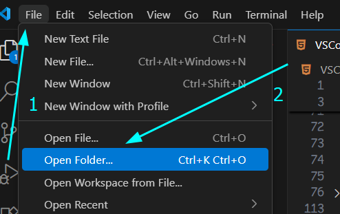

x + y
x tuşuna basılı tutarken y tuşuna basın
x > y
x tuşuna bastıktan sonra y tuşuna basın
Örnek:
CTRL + k > CTRL + c
CTRL tuşuna basılı tutarken k tuşuna basın
ardından (elinizi çektikten sonra)
CTRL tuşuna bastıktan sonra c tuşuna basın
VSCode u açdıktan sonra
File (Dosya) > Open Folder... (Klasör Aç...)
ile istenilen klasör açılabilir

Bir dosya açtığınızda doc yazıp entera basarsanız HTML kalıbını yapıştırır
div yazıp entera basarsanız
<div>
</div>
gelicektir
Dosya belirlemeniz gereken yerlerde CTRL + SPACE tuşlarına basarsanız VSCode un
şuanda
açtığı klasörden kullanabileceğiniz dosyaları gösterir
ENTER a basmanız durumunda gösterilen dosya veya klasör yazılır
(↑↓) tuşlarını kullanarak gösterlien dosyalar arasında seçim
yapabilirsiniz